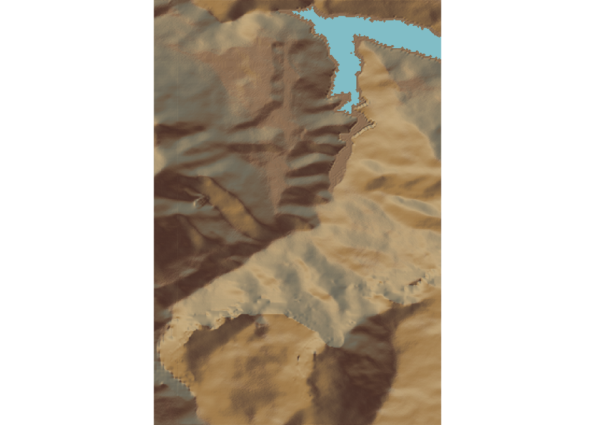
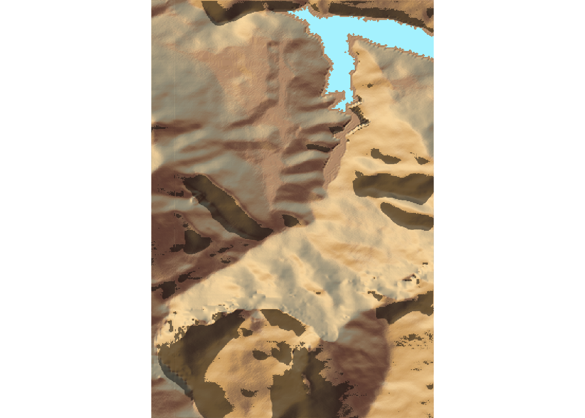
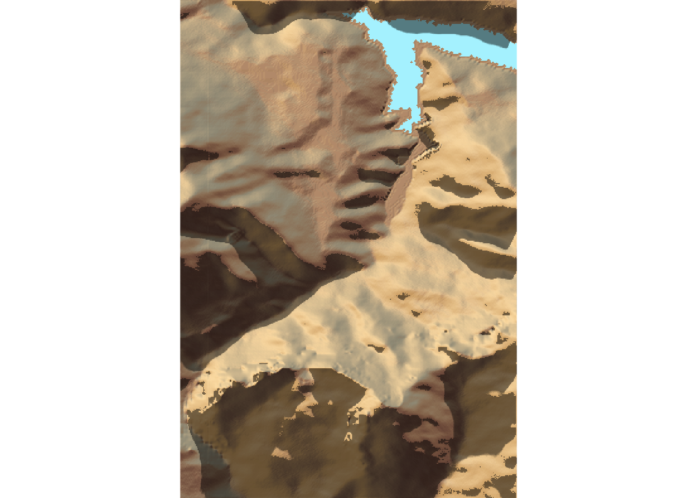
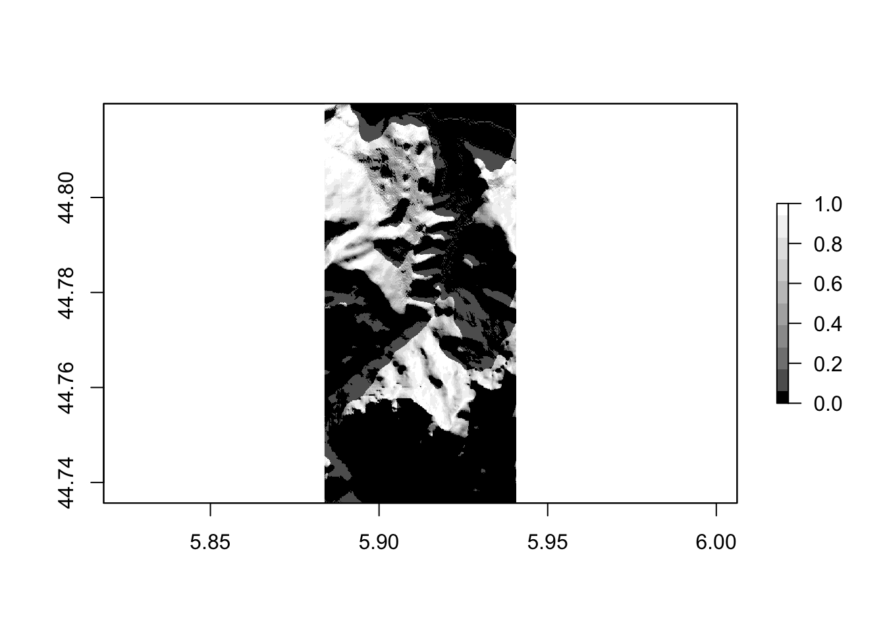
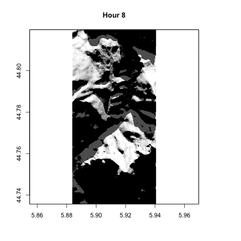

15 Obtaining Shadows for a Particular Date and Time
In many rally events, several stages are run twice at different times of the day. The rayshader package allows a sun angle to be defined that acts as the basis for raytracing and shadow casting. This means that we can render 3D models with the light source positioned appropriately for the different times of day a stage is scheduled to run.
Rally itineraries typically identify the start time of the first car into the stage. Based on the gap between each start and the number of cars, as well as the length of the stage, we can get an idea of the times within which the stage is likely to be being competed.
If we know what time of day a stage is to be run, we can light the model appropriately to show the anticipated direction and extent of shade.
15.1 Load in Base Data
As ever, let’s load in our stage data and the elevation raster and create a demo map:
geojson_filename = 'montecarlo_2021.geojson'
geojson_sf = sf::st_read(geojson_filename)## Reading layer `montecarlo_2021' from data source `/Users/tonyhirst/Documents/GitHub/visualising-rally-stages/montecarlo_2021.geojson' using driver `GeoJSON'
## Simple feature collection with 9 features and 2 fields
## geometry type: LINESTRING
## dimension: XY
## bbox: xmin: 5.243488 ymin: 43.87633 xmax: 6.951953 ymax: 44.81973
## geographic CRS: WGS 84library(raster)
library(rayshader)
# Previously downloaded TIF digital elevation model (DEM) file
stage_tif = "stage_elevation.tif"
# Load in the previously saved image raster
elev_img = raster(stage_tif)
# Get the natural zscale
auto_zscale = geoviz::raster_zscale(elev_img)
# Note we can pass in a file name or a raster object
elmat = raster_to_matrix(stage_tif)## [1] "Dimensions of matrix are: 382x565."demo_map = elmat %>%
sphere_shade(texture = "desert",
progbar = FALSE)Let’s also reuse a previously created function for creating shadows and shadow rasters:
# Left-right matrix flip
fliplr = function(x) {
if(length(dim(x)) == 2) {
x[,ncol(x):1]
} else {
x[,ncol(x):1,]
}
}
rasterify_rayshade = function(rayshade, original_raster){
# Transpose and flip the shade matrix
reorient_rayshade = fliplr(t( rayshade ))
# Generate the raster
rayshade_raster = raster( reorient_rayshade )
# Set the extent
extent(rayshade_raster) = extent(original_raster)
# Set the CRS
crs(rayshade_raster) = crs(original_raster)
rayshade_raster
}
# Example usage:
#ray_shade_array = ray_shade(heightmap, progbar=FALSE)
#ray_shade_raster = rasterify_rayshade(ray_shade_array, elev_img)15.2 Sunlight Times Vocabulary
According to its documentation, the suncalc::getSunlightTimes() function takes a date, time, latitude, and longitude to obtain the times for sunrise and sunset. The documentation also describes the complete range of returned values as follows:
- sunrise: sunrise (top edge of the sun appears on the horizon);
- sunriseEnd : sunrise ends (bottom edge of the sun touches the horizon)
- goldenHourEnd: morning golden hour (soft light, best time for photography) ends;
- solarNoon: solar noon (sun is in the highest position);
- goldenHour: evening golden hour starts;
- sunsetStart: sunset starts (bottom edge of the sun touches the horizon);
- sunset: sunset (sun disappears below the horizon, evening civil twilight starts);
- dusk: dusk (evening nautical twilight starts);
- nauticalDusk : nautical dusk (evening astronomical twilight starts);
- night: night starts (dark enough for astronomical observations);
- nadir: nadir (darkest moment of the night, sun is in the lowest position);
- nightEnd: night ends (morning astronomical twilight starts);
- nauticalDawn: nautical dawn (morning nautical twilight starts);
- dawn: dawn (morning nautical twilight ends, morning civil twilight starts).
15.3 Finding Sunrise and Sunset Times
To begin with, let’s use the suncalc passage to find sunrise and sunset times.
We can grab the approximate centroid location of the stage to use as the basis for our sun position calculations:
#https://www.rdocumentation.org/packages/sp/versions/1.3-2/topics/SpatialPoints-class
location_ish = attr(rgeos::gCentroid(as(geojson_sf[1,],'Spatial')),
'coords')
location_ish## x y
## 1 5.90937 44.78685#5.90937 44.78685#https://github.com/tylermorganwall/MusaMasterclass
library(suncalc)
getSunlightTimes(as.Date("2021-01-22"),
lat = location_ish[2], lon = -location_ish[1],
tz = "GMT")## date lat lon solarNoon nadir
## 1 2021-01-22 44.78685 -5.90937 2021-01-22 12:36:22 2021-01-22 00:36:22
## sunrise sunset sunriseEnd
## 1 2021-01-22 07:54:01 2021-01-22 17:18:42 2021-01-22 07:57:25
## sunsetStart dawn dusk
## 1 2021-01-22 17:15:19 2021-01-22 07:22:00 2021-01-22 17:50:44
## nauticalDawn nauticalDusk nightEnd
## 1 2021-01-22 06:46:15 2021-01-22 18:26:29 2021-01-22 06:11:32
## night goldenHourEnd goldenHour
## 1 2021-01-22 19:01:12 2021-01-22 08:39:10 2021-01-22 16:33:34# Can we get the timezone from WRC json event metadata?
# Also first on stage times from itineraryFrom the itinerary and the stage location data, as well as the number of cars on the startlist, we should be able to estimate the likely sunlight conditions expected for the first and last cars into the stage (weather may also have an effect, of course!).
#Start and hour after sunrise and end an hour before sunset
time_example = lubridate::ymd_hms("2021-01-22 05:30:00", tz = "UTC")
time_example## [1] "2021-01-22 05:30:00 UTC"The suncalc::getSunlightPosition() takes a similar range of input arguments and returns information describing the positioning of the sun in the sky. Once again, the documentation describes the returned values:
- altitude: sun altitude above the horizon in radians, e.g. 0 at the horizon and PI/2 at the zenith (straight over your head)
- azimuth: sun azimuth in radians (direction along the horizon, measured from south to west), e.g. 0 is south and Math.PI * 3/4 is northwest
Let’s see how the shading looks at different times of the day for the same stage…
First, create a base map to work with:
base_map = elmat %>%
sphere_shade(texture = "desert", progbar = FALSE) %>%
add_water(detect_water(elmat, progbar = FALSE),
color = "desert")Now let’s create a function for determining the sun altitude and sun angle:
sun_alt_angle = function(date_time, lat, lon){
sun_pos = suncalc::getSunlightPosition(date=date_time,
lat = lat,
lon = lon)
# recalculation into degrees and correct (north) orientation of azimuth
# Convert to degrees
sunaltitude = sun_pos$altitude * (180/pi)
sunangle = 180 + sun_pos$azimuth * (180/pi) # From North
list(altitude= sunaltitude,
angle = sunangle)
}
date_time = "2021-01-22 07:30:00 UTC"
sun_pos = sun_alt_angle(date=date_time,
lat = location_ish[2],
lon = -location_ish[1])
sun_pos$altitude## [1] -4.61122sun_pos$angle## [1] 113.3318We can also create a function to plot the map:
#rgl::clear3d()
shadow_mapper = function(sunpos){
elmat %>%
sphere_shade(texture = "desert", progbar = FALSE) %>%
add_water(detect_water(elmat, progbar = FALSE),
color = "desert") %>%
add_shadow(ray_shade(elmat, zscale = auto_zscale,
sunangle = sunpos$altitude,
sunaltitude = sunpos$altitude,
lambert = FALSE,
#Suppress the progress bar display
progbar = FALSE), 0.3) %>%
plot_map()
#plot_3d(elmat, zscale=11)
}
#rgl::rglwidget()So let’s see if we can render an early morning view:
date_time = "2021-01-22 07:30:00 UTC"
sun_pos = sun_alt_angle(date=date_time,
lat = location_ish[2],
lon = -location_ish[1])
shadow_mapper(sun_pos)
A mid-morning view:
date_time = "2021-01-22 11:30:00 UTC"
sun_pos = sun_alt_angle(date=date_time,
lat = location_ish[2],
lon = -location_ish[1])
shadow_mapper(sun_pos)
#rgl::rglwidget()A mid-afternoon view:
date_time = "2021-01-22 15:30:00 UTC"
sun_pos = sun_alt_angle(date=date_time,
lat = location_ish[2],
lon = -location_ish[1])
shadow_mapper(sun_pos)
#rgl::rglwidget()And how about an early evening view?!
Note that if we push the time past sunset, the sun angle goes below the horizon and presumably tries to illuminate the model from below… so it’s probably best to try to trap for times that are too far after sundown or before sunrise, perhaps?
date_time = "2021-01-22 19:30:00 UTC"
sun_pos = sun_alt_angle(date=date_time,
lat = location_ish[2],
lon = -location_ish[1])
shadow_mapper(sun_pos)
#rgl::rglwidget()One view that might be interesting to generate is a movie that animates shadow cover over the course of a day.
Other parameters to consider: hillshade, shadow, shadowdepth.
15.4 Animating Shade
If we create a raster stack of shadow rasters at different times of day, we can animate them using the raster::animate() function.
Let’s create a raster stack of shadows at different times of day. To create the stack, we need a list of rasters:
raster_shadow = function(heightmap, sunpos) {
ray_shade_array = ray_shade(heightmap,
sunangle = sunpos$altitude,
sunaltitude = sunpos$altitude,
progbar=FALSE)
rasterify_rayshade(ray_shade_array, elev_img)
}
shadow_rasters = c()
for (i in 8:16) {
date_time = sprintf("2021-01-22 %02d:30:00 UTC", i)
sun_pos = sun_alt_angle(date=date_time,
lat = location_ish[2],
lon = -location_ish[1])
shadow_rasters = c(shadow_rasters,
raster_shadow(elmat, sun_pos))
}
raster_stack <- stack(shadow_rasters)
nlayers(raster_stack)## [1] 9plot(shadow_rasters[[3]],
col = grey.colors(10, start=0, end=1))
We can animate the raster stack as an animated gif using the animation::saveGIF() function:
shadow_gif = "shadowmovie.gif"
animation::saveGIF({
for (i in 1:nlayers(raster_stack)){
plot(shadow_rasters[[i]],
col = grey.colors(10, start=0, end=1),
legend=FALSE,
main = paste("Hour", 7+i))
}
}, movie.name = shadow_gif, autobrowse=FALSE)## Output at: shadowmovie.gif## [1] TRUEknitr::include_graphics(shadow_gif)